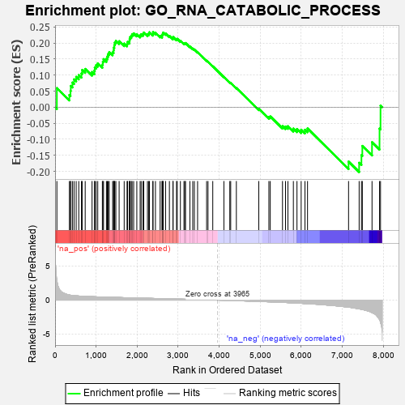
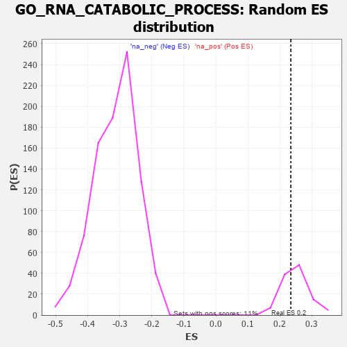

| | | Dataset | 7d |
| Phenotype | NoPhenotypeAvailable |
| Upregulated in class | na_pos |
| GeneSet | GO_RNA_CATABOLIC_PROCESS |
| Enrichment Score (ES) | 0.23418833 |
| Normalized Enrichment Score (NES) | 0.9402728 |
| Nominal p-value | 0.622807 |
| FDR q-value | 0.7869821 |
| FWER p-Value | 1.0 |
Table: GSEA Results Summary

Fig 1: Enrichment plot: GO_RNA_CATABOLIC_PROCESS
Profile of the Running ES Score & Positions of GeneSet Members on the Rank Ordered List
| PROBE | GENE SYMBOL | GENE_TITLE | RANK IN GENE LIST | RANK METRIC SCORE | RUNNING ES | CORE ENRICHMENT | | 1 | PCBP4 | | | 44 | 2.875 | 0.0596 | Yes |
| 2 | CNOT7 | | | 348 | 0.750 | 0.0382 | Yes |
| 3 | POP1 | | | 376 | 0.720 | 0.0511 | Yes |
| 4 | AXIN2 | | | 383 | 0.713 | 0.0665 | Yes |
| 5 | MLH1 | | | 423 | 0.679 | 0.0769 | Yes |
| 6 | CNOT6 | | | 462 | 0.655 | 0.0870 | Yes |
| 7 | CNOT2 | | | 514 | 0.625 | 0.0947 | Yes |
| 8 | APEX1 | | | 577 | 0.604 | 0.1005 | Yes |
| 9 | SMG9 | | | 643 | 0.579 | 0.1054 | Yes |
| 10 | PARN | | | 660 | 0.572 | 0.1163 | Yes |
| 11 | WDR61 | | | 734 | 0.549 | 0.1195 | Yes |
| 12 | NSUN2 | | | 901 | 0.506 | 0.1099 | Yes |
| 13 | EDC4 | | | 957 | 0.494 | 0.1141 | Yes |
| 14 | ZPR1 | | | 967 | 0.491 | 0.1241 | Yes |
| 15 | DEDD2 | | | 999 | 0.484 | 0.1311 | Yes |
| 16 | AKT1 | | | 1040 | 0.476 | 0.1369 | Yes |
| 17 | PSMD7 | | | 1152 | 0.454 | 0.1331 | Yes |
| 18 | GRSF1 | | | 1164 | 0.452 | 0.1419 | Yes |
| 19 | PSMD2 | | | 1181 | 0.450 | 0.1501 | Yes |
| 20 | SMG8 | | | 1251 | 0.438 | 0.1513 | Yes |
| 21 | CNOT3 | | | 1274 | 0.435 | 0.1583 | Yes |
| 22 | DKC1 | | | 1292 | 0.431 | 0.1660 | Yes |
| 23 | NRDE2 | | | 1320 | 0.425 | 0.1722 | Yes |
| 24 | NOCT | | | 1402 | 0.409 | 0.1712 | Yes |
| 25 | LSM4 | | | 1426 | 0.405 | 0.1775 | Yes |
| 26 | RBM10 | | | 1430 | 0.404 | 0.1862 | Yes |
| 27 | LSM6 | | | 1444 | 0.402 | 0.1937 | Yes |
| 28 | HBS1L | | | 1454 | 0.399 | 0.2016 | Yes |
| 29 | TAF15 | | | 1481 | 0.393 | 0.2072 | Yes |
| 30 | BOLL | | | 1561 | 0.381 | 0.2058 | Yes |
| 31 | TNPO1 | | | 1684 | 0.359 | 0.1985 | Yes |
| 32 | LSM7 | | | 1754 | 0.344 | 0.1976 | Yes |
| 33 | AGO2 | | | 1767 | 0.343 | 0.2038 | Yes |
| 34 | PSMD4 | | | 1811 | 0.335 | 0.2060 | Yes |
| 35 | FMR1 | | | 1816 | 0.334 | 0.2130 | Yes |
| 36 | LSM2 | | | 1829 | 0.332 | 0.2190 | Yes |
| 37 | PSMD6 | | | 1858 | 0.326 | 0.2229 | Yes |
| 38 | DCP1A | | | 1877 | 0.323 | 0.2279 | Yes |
| 39 | DDX6 | | | 1915 | 0.318 | 0.2304 | Yes |
| 40 | MYEF2 | | | 1992 | 0.306 | 0.2277 | Yes |
| 41 | DDX49 | | | 2073 | 0.295 | 0.2243 | Yes |
| 42 | LSM1 | | | 2098 | 0.291 | 0.2278 | Yes |
| 43 | PSME4 | | | 2143 | 0.285 | 0.2287 | Yes |
| 44 | CNOT4 | | | 2161 | 0.283 | 0.2329 | Yes |
| 45 | PSMF1 | | | 2251 | 0.268 | 0.2277 | Yes |
| 46 | LSM3 | | | 2282 | 0.263 | 0.2299 | Yes |
| 47 | NBAS | | | 2299 | 0.260 | 0.2337 | Yes |
| 48 | NCBP2 | | | 2383 | 0.248 | 0.2288 | Yes |
| 49 | PELO | | | 2386 | 0.247 | 0.2342 | Yes |
| 50 | FEN1 | | | 2446 | 0.237 | 0.2321 | No |
| 51 | PSMD5 | | | 2560 | 0.218 | 0.2227 | No |
| 52 | PDE12 | | | 2608 | 0.211 | 0.2215 | No |
| 53 | PATL1 | | | 2610 | 0.210 | 0.2261 | No |
| 54 | PUM2 | | | 2627 | 0.209 | 0.2288 | No |
| 55 | EIF3E | | | 2634 | 0.207 | 0.2328 | No |
| 56 | CSDE1 | | | 2693 | 0.200 | 0.2300 | No |
| 57 | XRN1 | | | 2786 | 0.185 | 0.2225 | No |
| 58 | DCPS | | | 2873 | 0.170 | 0.2154 | No |
| 59 | CIRBP | | | 2876 | 0.170 | 0.2190 | No |
| 60 | XPO1 | | | 2960 | 0.156 | 0.2120 | No |
| 61 | RNH1 | | | 2977 | 0.153 | 0.2135 | No |
| 62 | PAN3 | | | 3054 | 0.142 | 0.2070 | No |
| 63 | SMG7 | | | 3141 | 0.131 | 0.1991 | No |
| 64 | ERN2 | | | 3160 | 0.129 | 0.1997 | No |
| 65 | PSMD9 | | | 3179 | 0.125 | 0.2003 | No |
| 66 | SMG5 | | | 3285 | 0.108 | 0.1894 | No |
| 67 | RBM8A | | | 3355 | 0.096 | 0.1828 | No |
| 68 | TUT4 | | | 3394 | 0.090 | 0.1800 | No |
| 69 | CNOT1 | | | 3473 | 0.081 | 0.1720 | No |
| 70 | DHX9 | | | 3693 | 0.044 | 0.1452 | No |
| 71 | CASC3 | | | 3727 | 0.037 | 0.1418 | No |
| 72 | SMG1 | | | 3843 | 0.021 | 0.1277 | No |
| 73 | MTOR | | | 4114 | -0.025 | 0.0940 | No |
| 74 | PCID2 | | | 4258 | -0.051 | 0.0770 | No |
| 75 | PSME3 | | | 4280 | -0.056 | 0.0756 | No |
| 76 | PRR5L | | | 4418 | -0.080 | 0.0600 | No |
| 77 | DXO | | | 4964 | -0.191 | -0.0048 | No |
| 78 | ATM | | | 5210 | -0.249 | -0.0303 | No |
| 79 | SND1 | | | 5244 | -0.256 | -0.0286 | No |
| 80 | SIDT2 | | | 5542 | -0.331 | -0.0588 | No |
| 81 | LARP1 | | | 5616 | -0.349 | -0.0602 | No |
| 82 | PSMD1 | | | 5674 | -0.367 | -0.0591 | No |
| 83 | PAN2 | | | 5807 | -0.408 | -0.0666 | No |
| 84 | SET | | | 5895 | -0.434 | -0.0678 | No |
| 85 | TUT7 | | | 5997 | -0.471 | -0.0699 | No |
| 86 | UBB | | | 6090 | -0.503 | -0.0702 | No |
| 87 | ROCK1 | | | 6152 | -0.520 | -0.0661 | No |
| 88 | DDX5 | | | 7152 | -1.037 | -0.1694 | No |
| 89 | UBC | | | 7410 | -1.274 | -0.1732 | No |
| 90 | HELZ2 | | | 7466 | -1.356 | -0.1494 | No |
| 91 | XRN2 | | | 7488 | -1.384 | -0.1207 | No |
| 92 | DCP2 | | | 7724 | -1.833 | -0.1089 | No |
| 93 | PSMD3 | | | 7907 | -2.887 | -0.0665 | No |
| 94 | PSMD8 | | | 7931 | -3.286 | 0.0051 | No |
Table: GSEA details [plain text format]

Fig 2: GO_RNA_CATABOLIC_PROCESS: Random ES distribution
Gene set null distribution of ES for GO_RNA_CATABOLIC_PROCESS